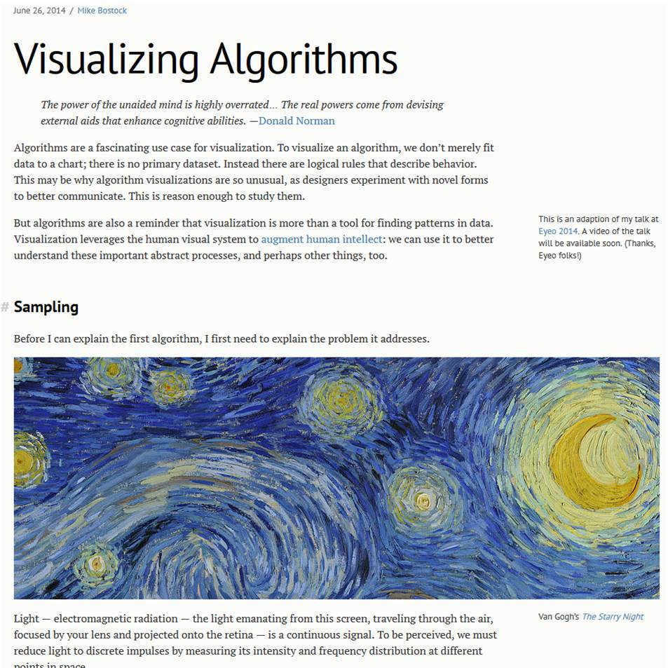

Visualizing Algorithms
Perma🔗 (via @codinghorror)

Mike Bostock gives a thoroughly fascinating view into a few different types of algorithms. Some of it was way over my head, but I still really enjoyed the essay. I was particularly drawn to the organic feel of Bridson’s algorithm for Poisson-disc sampling, the innate story-telling nature of the colored thread visualization for sorting, and the creeper-like reaching of Wilson's Algorithm for maze generation.
- Prior: Tap In
- Next: The Rise of Nintendo: A Story in 8 Bits